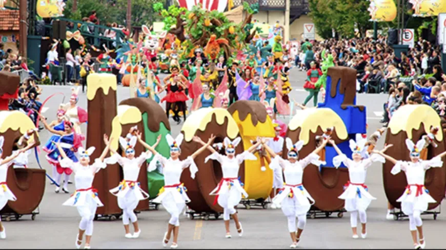

No Brasil, a Páscoa é uma data muito importante tanto no aspecto religioso quanto no cultural. Para os cristãos, ela representa a ressurreição de Jesus Cristo e é celebrada com missas, cultos, encenações religiosas e reuniões em família. Durante a Semana Santa, muitas pessoas participam de celebrações especiais, principalmente na Sexta-feira Santa e no Domingo de Páscoa.
Além da parte religiosa, a Páscoa no Brasil também é muito marcada pelos ovos de chocolate e pelo coelho da Páscoa. As lojas costumam ficar decoradas com enfeites coloridos, e é comum presentear crianças e familiares com chocolates. Essa tradição se tornou uma das mais conhecidas no país, principalmente entre as crianças.
Outro costume bastante comum é o almoço de Páscoa em família. Muitas pessoas se reúnem para compartilhar refeições especiais, como peixe, bacalhau e sobremesas. Dessa forma, a Páscoa no Brasil é celebrada como um momento de fé, união, carinho e renovação.
